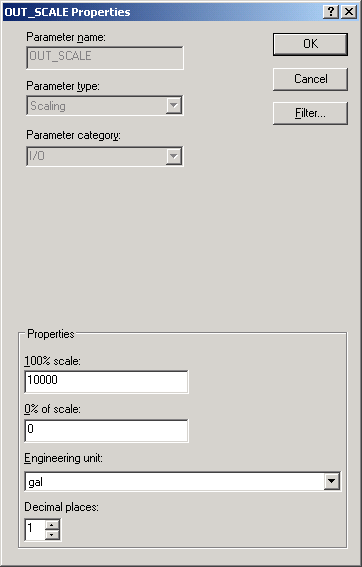

In the
Palette view, select the
IO palette. A list of function blocks related
to I/O appears.
Select the
Analog Input (AI) function block from the
palette, and then drag it onto the Function Block diagram.
To find out more about the AI function block, select and
right-click the block, and then click
Help on the menu.
DeltaV Books Online opens to a topic about the AI
block. After reading about the function block, close DeltaV Books Online and
return to Control Studio.
Make sure the block is selected.
In the list of parameters, double-click HI_HI_LIM (or right-click
it and then select
Properties).
In the
Properties dialog, change the value to 1000 and
click
OK.
Double-click the
IO_IN parameter.
In the
Properties dialog, enter the Device Signal Tag,
LT-1 (for the level transmitter), and then click
OK. The system selects the default parameter.
In the Parameter list, note that the parameter named
L_TYPE (linearization type) has a default value of Indirect. This must remain
Indirect for you to be able to define the Engineering Units of the input.
To set the Engineering Units (EU) and the scale, double-click the
OUT_SCALE parameter.

Modify OUT_SCALE as follows:
Change the 100% scale from 100 to 10000 (for 10,000 gallons).
For Engineering unit, select
gal (for gallons).
Click
OK.
For our example, we want to make the output value easy to
reference systemwide. Promoting the parameter to the module level allows the
value to be referenced throughout the system as LI-101/PV rather than
LI-101/AI1/OUT.